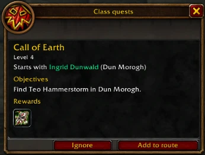
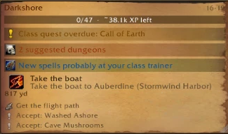

When a class quest becomes available, or is overdue for your level, an alert appears in the tracker. Click it to see where the chain starts, its objectives and its rewards.
“Add to route” puts it in your route, “Ignore” hides it. Overdue chains also come first in the journal’s Class quests tab.
Dwarf shaman, level 17: Call of Earth is overdue.

